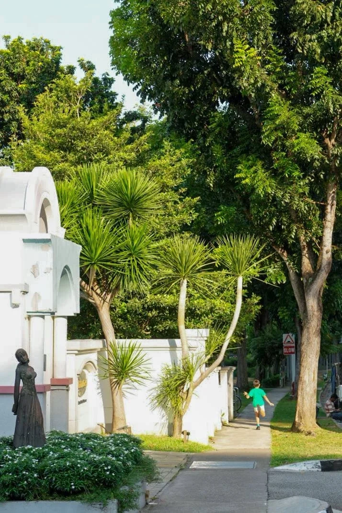

Who are we?


When was the last time you remember feeling inspired? What sparked the inspiration for you? Did it happen by chance, or was it intentionally orchestrated?
A single moment of inspiration is powerful - it can reveal a desire hidden deep in our hearts, excite our imagination towards new possibilities, and lead us to explore uncharted paths in life.
Inspiration can turn our lives around.
We believe that every young person is yearning to be inspired, by something or someone. We believe that a moment of inspiration is all it takes to turn a young person’s life around, We are committed to making these moments an everyday affair.
Our Vision
Creating inspiration everywhere.
Our Mission
We do so through innovating experiences for STEAM education (Science, Technology, Engineering, Arts, Mathematics) to be caught.
Our Values
We believe that
STEAM education is best caught, and not taught
Every young person yearns to be inspired
A moment of inspiration is all it takes turn a young person’s life around